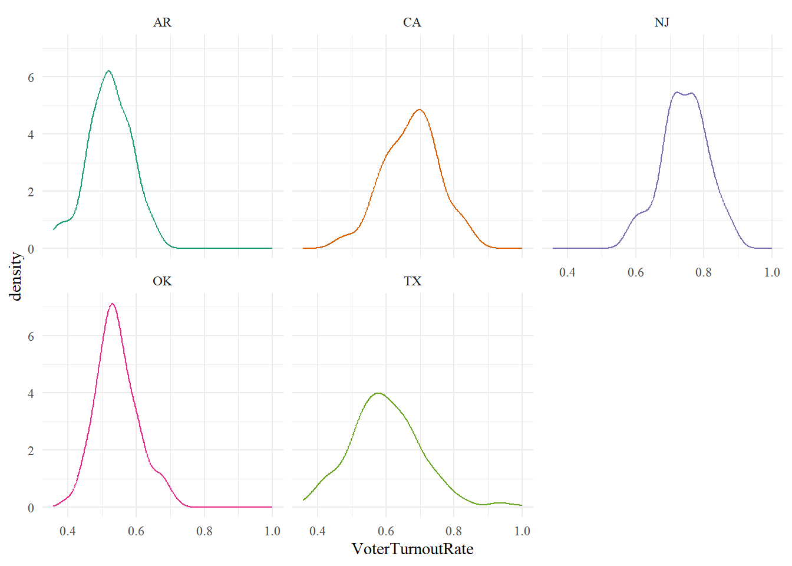
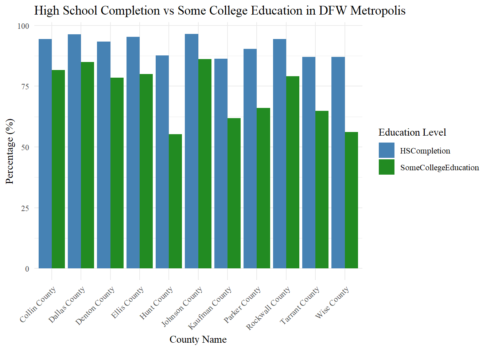

library(tidyverse)
file_path <- "E:/Fall 2024 (Semester 7)/EPPS 6356/Assignment 4/DV_ProjectData.csv"
data <- read.csv(file_path)
head(data)
summary(data)
## Cleaning Data
state_means <- data %>%
group_by(State) %>%
summarise(across(c(VoterTurnoutRate, MedianHouseholdIncome, UnemploymentRate, HSCompletion, SomeCollegeEducation,PoorOrFairHealth, AvgPoorPhysHealthDays, AvgPoorMentalHealthDays, ObesityRate,
FoodEnviornmentIndex, FoodInsecurity, LimitedAccesstoHealthyFoods, PhysInactivityRate,Population), mean))
states_of_interest <- c("CA", "AR", "TX", "OK", "NJ")
state_means_filtered <- state_means %>%
filter(State %in% states_of_interest)
par(family="serif")Assignment 4
Hackathon (Charts 1-4)
Graph 1 (Chantan)
bluecolorramp <- colorRampPalette(c("skyblue", "mediumblue"))(length(state_means_filtered$MedianHouseholdIncome))
colors <- bluecolorramp[rank(state_means_filtered$MedianHouseholdIncome)]
par(family="serif", cex=0.9, mar=c(3, 3.5, 3, 1))
barplot(state_means_filtered$VoterTurnoutRate, width=state_means_filtered$MedianHouseholdIncome, space=0,
col=colors, ylim=c(0,0.8), names.arg=state_means_filtered$State)
title(main="Voter Turnout vs Median Household Income", cex.main=1.5)
mtext("Voter Turnout Rate", , side=2, line=2.2, cex=1.1)
box(bty="l")
legend("topright", legend = c("Low Income", "High Income"), fill = c("skyblue", "mediumblue"),
title = "Income Level")
Graph 2 (Daniel)
reduceddata <- data%>%
filter(State == "CA"| State=="AR"|State =="TX" | State == "OK"|State =="NJ")
ggplot(data = reduceddata,aes(x=VoterTurnoutRate, color = State))+
geom_density()+
scale_color_brewer(palette = "Dark2")+
theme_minimal()+
theme(legend.position = "none",
text = element_text(family = "serif"))+
facet_wrap(~State)
Graph 3 (Ahana)
ggplot(state_means_filtered, aes(x = reorder(State, VoterTurnoutRate), y = VoterTurnoutRate, fill= "forestgreen")) +
geom_col(show.legend=FALSE) +
labs(title = "Voter Turnout Rate by State", x = "State", y = "Voter Turnout Rate") +
theme_classic() +
theme(text = element_text(family = "serif")) +
coord_flip()
Graph 4 (Abhishek)
# Cleaning Data to Include DFW Counties
dfw_counties <- c("Collin County", "Dallas County", "Denton County", "Ellis County",
"Hunt County", "Kaufman County", "Rockwall County",
"Johnson County", "Parker County", "Tarrant County", "Wise County")
dfw_data <- subset(data, CountyName %in% dfw_counties)
# Convert the data from wide to long format
dfw_data_long <- dfw_data %>%
pivot_longer(cols = c("HSCompletion", "SomeCollegeEducation"),
names_to = "EducationLevel",
values_to = "Percentage")
# Create the column chart
ggplot(dfw_data_long, aes(x = CountyName, y = Percentage * 100, fill = EducationLevel)) +
geom_bar(stat = 'identity', position = 'dodge') +
labs(title = 'High School Completion vs Some College Education in DFW Metropolis ',
x = 'County Name', y = 'Percentage (%)') +
scale_fill_manual(name = 'Education Level',
values = c('HSCompletion' = 'steelblue', 'SomeCollegeEducation' = 'forestgreen')) +
theme_minimal() +
theme(text = element_text(family = "serif"),
axis.text.x = element_text(angle = 45, hjust = 1, vjust = 1))
Malinowski’s Music Visualization Review
This review is also posted on my blog along with the literate programming notes
Video:
The color used in this visualization are chosen by Malinowski’s “Harmonic Coloring” method. Blue signifies the tonic, or “home pitch”, basically the most important note within the music’s chosen key. The redder a note is, the more away it is from this tonic. This coloring stays consistent with the entire piece. When one looks at the colors as a whole, one will notice that some sections of the piece are “more blue” while other sections are “more red”. This is most evident at 4:42 and again at 5:50. This shows a key/tone change in the piece. In this piece, there is technically no key change, however, there are points in the piece where there are significantly more notes played outside the piece’s chose scale, or more away from the tonic. This blue-to-red shows this change in the piece.
Another consistent part of this visualization is how the note’s length and volume are represented. The length of the note is generally represented by how long the symbol is. There are some symbols that do not really have a length, like the “dots” that appear in 2:37 and the “swipes” that appear in 3:16. The dots represent a quick succession of notes played in staccato (shortly and quickly), and thus by definition have a very short length which can be easily expressed and understood as a dot (even in music a staccato is symbolized by a dot on top of a note). The swipes note length is symbolized by the “crescent” that comes out in the direction of the swipe towards the next note in the phrase. The volume of a note is represented by the width of the symbol. If the symbol is directly connected to another symbol, this means that the second note is played immediately after the note connected to it, without any “rest”.
Finally, there are different symbols used throughout the piece. Generally, if there is a dramatic symbol change, it means that the piece is using a new melody. For instance, the beginning of the first melody is technically at 0:44, represented by the notes symbolized by the “lens” (the round shape at is thinner at the ends). This melody appears again at 4:45 in a different key and 7:22 in a faster tempo, symbolized the same way. The second main melody appears at 3:29 with a new symbol, the aforementioned “swipes”. These appear again at 5:14 in a different key and 6:52, symbolized the same way. Both these melodies are usually accompanied by their own harmony, an oval with a white line for the lens melody and a solid color oval for the swipes melody. This is not always the case, though, like in 7:22, the lens melody plays with the swipe’s harmony, until around 8:00 where the lens melody plays with its respective harmony. There is a brief unique melody played at 2:14, symbolized by “pins”, which only appears once. The aforementioned “dots” appear at 2:37, 5:53, 8:34, again representing a rapid succession of staccato notes. They appear out of nowhere and disappear quicker than the rest of the notes in the visualization, possibly mimicking the erratic and quick nature of the phrase. Finally, at 9:56, there are square symbols that only appear here to conclude the piece. These squares were likely uniquely used here to represent both hands of the pianist playing the exact same chromatic scale at the exact same time, which happens no where else in the piece. The rolling square animation to symbolize the “fall” to the next note also brings to mind the “steps” of a chromatic scale, making the visualization represent the feeling of the music like the “dots” did.
In all, this visualization is able to capture the feeling of the piece and call backs to certain melodies with its great use of symbol shapes, and the reader can easily follow along which notes are played and when the key changes depending on the color.